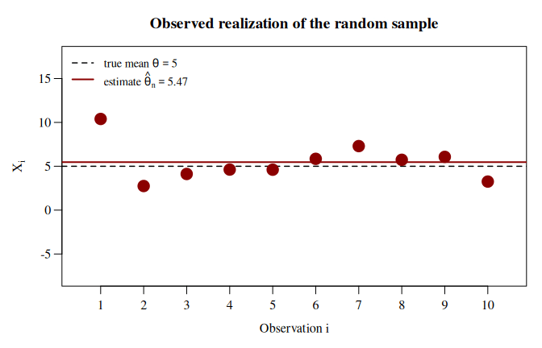
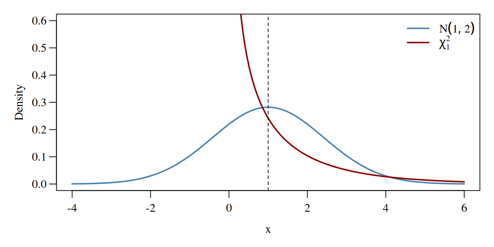
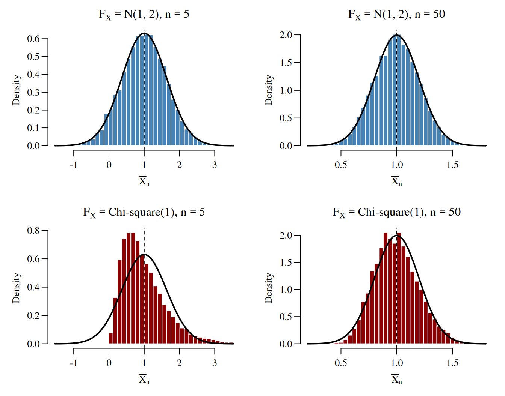

set.seed(321)
mean_X <- 5
var_X <- 10
n <- 10
sample_X <- rnorm(n = n, mean = mean_X, sd = sqrt(var_X))Some Important Concepts
Random Sample
Let \[ \{X_1, X_2, \ldots, X_n\} \] denote an (i.i.d.) random sample, i.e., a collection of \(n\) random variables that all have the same distribution \(F_X\), \[ X_i\sim F_X\quad\text{for all}\quad i=1,\dots,n, \] and that are independent of each other, \[ X_i \independent X_j \quad \text{for all} \quad i \neq j. \]
The symbol \(\independent\) means independent of.
The abbreviation i.i.d. stands for independent and identically distributed.
Examples: \(F_X\) and Parameters of Interest \(\theta\)
- Normal distribution: \(F_X = \mathcal{N}(\mu_X, \sigma_X^2)\)
- \(\theta = E(X) = \mu_X\), or
- \(\theta = \operatorname{Var}(X) = \sigma^2_X\)
- Chi-squared distribution: \(F_X = \chi^2_{\operatorname{df}}\)
- \(\theta = E(X) = \operatorname{df}\), or
- \(\theta = \operatorname{Var}(X) = 2\cdot \operatorname{df}\)
- A distribution without a name: \(F_X\) is some unnamed distribution (most distributions have no name)
- \(\theta = E(X)\), or
- \(\theta = \operatorname{Median}(X)\), or
- \(\theta = p\text{-Quantile}(X)\)
- A multivariate distribution: \(F_{YX}\) is the joint distribution of \((Y, X^\top) \in \mathbb{R}^{K+1}\)
- \(\theta = \beta\), the coefficient vector of the regression model \(Y_i = X_i^\top\beta + \varepsilon_i\)
Estimator
To estimate the unknown parameter \(\theta\), we use an estimator, which is simply a function of the random sample, \[ \hat{\theta}_n \equiv \hat{\theta}(X_1, X_2, \ldots, X_n). \]
Since estimators are functions of random variables, they are random variables themselves.
🔊 Estimators are Random Variables❗
Thus, to understand an estimator, we need to know its statistical properties, i.e., its distribution or, at least, its mean and variance.
Observed data are just one observed realization of the random sample, \[ \{X_{1,\operatorname{obs}}, X_{2,\operatorname{obs}}, \ldots, X_{n,\operatorname{obs}}\}. \] Each observed realization of the random sample yields a realization of the estimator, \[ \hat{\theta}_{n,\operatorname{obs}} \equiv \hat{\theta}(X_{1,\operatorname{obs}}, X_{2,\operatorname{obs}}, \ldots, X_{n,\operatorname{obs}}). \]
This can be confusing: in practice, we typically have only one data set and, therefore, only one realization of the estimator. Still, we should keep in mind all the other data sets we could have obtained.
The following examples illustrate two random samples and their estimators:
Example: Estimating the Mean from an i.i.d. Random Sample
Let \[ \{X_1, \ldots, X_n\} \] be an i.i.d. random sample with \(X_i \sim F_X\) for all \(i = 1, \dots, n\).
We estimate the unknown mean \(\theta \equiv \mu_X\) by the sample mean \[ \hat\theta_n \equiv \hat\mu_n = \frac{1}{n}\sum_{i=1}^n X_i. \]
The following code generates one realization of the random sample. The fixed seed, set.seed(321), makes the pseudo-random numbers reproducible.
The observed realization, stored in sample_X, \[
\{X_{1,\operatorname{obs}}, \ldots, X_{n,\operatorname{obs}}\} = \{10.39,\ 2.75,\ \dots,\ 3.25\}
\] yields the estimate \[
\hat{\theta}_{n,\operatorname{obs}} = \frac{1}{n}\sum_{i=1}^n X_{i,\operatorname{obs}} = 5.47.
\]
A new sample yields a new estimate. The animation shows the observed sample (first frame, red) followed by further realizations of the random sample and of the estimator \(\hat\theta_n\) (blue).

Summary:
The data change from realization to realization, and so does the estimate. That is, \(\hat\theta_n\) is a random variable, and \(\hat{\theta}_{n,\operatorname{obs}}\) is just one of its realizations.
The realizations of \(\hat\theta_n\) lie close to the (usually unknown) true mean \(\mu_X = 5\). That is, the distribution of \(\hat\theta_n\) is concentrated around \(\mu_X\). This concentration increases with the sample size \(n\).
Example: Estimating Regression Coefficients from an i.i.d. Random Sample
Let \[ \{(Y_1, X_1^\top), \ldots, (Y_n, X_n^\top)\} \] be an i.i.d. random sample with \((Y_i, X_i^\top) \sim F_{YX}\) for all \(i = 1, \dots, n\), where
\(Y_i = X_i^\top \beta + \varepsilon_i\) is the outcome, and
\(X_i \in \mathbb{R}^K\) is the vector of predictors of observation \(i\).
We estimate the unknown coefficient vector \(\theta \equiv \beta\) by the OLS estimator \[ \hat\theta_n \equiv \hat\beta_n = \left(X^\top X\right)^{-1} X^\top Y, \] where \[ X = \begin{pmatrix} X_1^\top \\ X_2^\top \\ \vdots \\ X_n^\top \end{pmatrix} = \begin{pmatrix} X_{11} & X_{12} & \cdots & X_{1K} \\ X_{21} & X_{22} & \cdots & X_{2K} \\ \vdots & \vdots & \ddots & \vdots \\ X_{n1} & X_{n2} & \cdots & X_{nK} \end{pmatrix} \quad\text{and}\quad Y = \begin{pmatrix} Y_1 \\ Y_2 \\ \vdots \\ Y_n \end{pmatrix} \] are the \(n \times K\) matrix of predictors and the \(n \times 1\) vector of outcomes.
The following code generates one realization of the random sample and computes the estimate.
set.seed(321)
n <- 20
beta <- c(2, -1)
X <- cbind(1, runif(n, min = 0, max = 4)) # first column: intercept
eps <- rnorm(n, mean = 0, sd = 1)
Y <- X %*% beta + eps
beta_hat <- solve(t(X) %*% X) %*% t(X) %*% YThe observed realization, stored in Y and X, \[
\{(Y_{1,\operatorname{obs}}, X_{1,\operatorname{obs}}^\top), \ldots, (Y_{n,\operatorname{obs}}, X_{n,\operatorname{obs}}^\top)\} = \{(-1.48,\ 1,\ 3.82),\ \dots,\ (-1.04,\ 1,\ 2.56)\}
\] yields the estimate, stored in beta_hat, \[
\hat{\theta}_{n,\operatorname{obs}} = (1.64,\ -0.79)^\top.
\]
A new sample yields a new estimate. The animation shows the observed sample (first frame, red) followed by further realizations of the random sample and of the estimator \(\hat\theta_n\) (blue).

Summary:
The data change from realization to realization, and so does the estimate. That is, \(\hat\theta_n\) is a random vector, and \(\hat{\theta}_{n,\operatorname{obs}}\) is just one of its realizations.
The estimated regression lines lie close to the (usually unknown) true line with \(\beta = (2, -1)^\top\). That is, the distribution of \(\hat\theta_n\) is concentrated around \(\beta\). This concentration increases with the sample size \(n\).
Bias, Variance, and Consistency of Estimators
Since an estimator is a random variable, it has a distribution and, typically, a mean and a variance. We use them to assess the quality of an estimator.
Bias. An estimator is called unbiased if \[ \operatorname{Bias}\left(\hat\theta_n\right) = 0 \quad\text{for all}\quad n. \] That is, averaged over all hypothetical data sets, the estimator equals \(\theta\). Unbiasedness holds for every fixed \(n\); it is a small-sample property. Many estimators, however, are biased for fixed \(n\). Then, we want them to be at least asymptotically unbiased, \[ \operatorname{Bias}\left(\hat\theta_n\right) \to 0 \quad\text{as}\quad n \to \infty. \]
Variance. (Asymptotic) unbiasedness alone does not guarantee that the realizations of \(\hat\theta_n\) are close to \(\theta\): if \(\operatorname{Var}(\hat\theta_n)\) is large, the realizations scatter widely around their mean, even in large samples. Therefore, we also want estimators to be consistent.
That is, the realizations of a consistent estimator concentrate around \(\theta\) as the sample size grows.
A convenient way to check consistency is to verify that both the bias and the variance vanish, \[ \operatorname{Bias}\left(\hat\theta_n\right) \to 0 \quad\text{and}\quad \operatorname{Var}\left(\hat\theta_n\right) \to 0 \quad\text{as}\quad n \to \infty, \] or, equivalently, that \(\operatorname{MSE}(\hat\theta_n) \to 0\). This condition is sufficient (but not necessary) for consistency; see the box below for a proof.
🤓 Nerd’s Box: A Sufficient Condition for Consistency
An estimator \(\hat\theta_n\) with \[ \operatorname{Bias}\left(\hat\theta_n\right) \to 0 \quad\text{and}\quad \operatorname{Var}\left(\hat\theta_n\right) \to 0 \quad\text{as}\quad n \to \infty \] is (weakly) consistent.
Proof. We use Chebyshev’s inequality: for any random variable \(Z\) with finite variance and any \(c > 0\), \[ P\left(\left|Z - E(Z)\right| > c\right) \leq \frac{\operatorname{Var}(Z)}{c^2}. \]
Let \(\varepsilon > 0\). Adding a zero, \(0 = -E(\hat\theta_n) + E(\hat\theta_n)\), and applying the triangle inequality, \(|a + b| \leq |a| + |b|\), yields \[ \left|\hat\theta_n - \theta\right| \leq \left|\hat\theta_n - E\left(\hat\theta_n\right)\right| + \left|\operatorname{Bias}\left(\hat\theta_n\right)\right|. \]
Since \(\operatorname{Bias}(\hat\theta_n) \to 0\), there is an \(n_0\) such that \(|\operatorname{Bias}(\hat\theta_n)| \leq \varepsilon/2\) for all \(n \geq n_0\). Thus, for all \(n \geq n_0\), the event \(|\hat\theta_n - \theta| > \varepsilon\) implies \(|\hat\theta_n - E(\hat\theta_n)| > \varepsilon/2\), i.e., \[ \left\{\left|\hat\theta_n - \theta\right| > \varepsilon\right\} \subseteq \left\{\left|\hat\theta_n - E\left(\hat\theta_n\right)\right| > \frac{\varepsilon}{2}\right\}. \]
Applying Chebyshev’s inequality with \(Z = \hat\theta_n\) and \(c = \varepsilon/2\) yields \[ P\left(\left|\hat\theta_n - \theta\right| > \varepsilon\right) \leq P\left(\left|\hat\theta_n - E\left(\hat\theta_n\right)\right| > \frac{\varepsilon}{2}\right) \leq \frac{4 \operatorname{Var}\left(\hat\theta_n\right)}{\varepsilon^2} \to 0 \quad\text{as}\quad n \to \infty. \quad \square \]
Asymptotic Normality and Confidence Intervals
(Asymptotic) unbiasedness and consistency are minimum requirements for any estimator. For hypothesis tests and confidence intervals, however, we need more: the distribution of \(\hat\theta_n\).
Problem: The distribution of \(\hat\theta_n = \hat\theta(X_1, \ldots, X_n)\) depends on the distribution \(F_X\) of the random sample, which is typically unknown.
Solution: Many estimators are asymptotically normal, which usually follows from a Central Limit Theorem (CLT): \[ \sqrt{n}\left(\hat{\theta}_n - \theta\right) \rightarrow_D \mathcal{N}\left(0, \operatorname{AVar}\left(\hat{\theta}_n\right)\right) \quad\text{as}\quad n \to \infty. \] Equivalently, for large \(n\), \[ \hat{\theta}_n \overset{a}{\sim} \mathcal{N}\left(\theta, \frac{1}{n}\operatorname{AVar}\left(\hat{\theta}_n\right)\right). \] Here, the asymptotic variance of \(\hat{\theta}_n\) is (using \(\operatorname{Var}(aZ + b) = a^2 \operatorname{Var}(Z)\)) \[ \operatorname{AVar}\left(\hat{\theta}_n\right) = \lim_{n\to\infty} \operatorname{Var}\left(\sqrt{n}\left(\hat{\theta}_n - \theta\right)\right) = \lim_{n\to\infty} n \operatorname{Var}\left(\hat{\theta}_n\right). \]
Why scale by \(\sqrt{n}\)? For a consistent estimator, \(\operatorname{Var}(\hat\theta_n) \to 0\). To obtain a non-degenerate limit distribution, we must scale appropriately. For most parametric estimators, the correct scaling factor is \(\sqrt{n}\).
Interpretation: The estimator, centered by \(\theta\) and scaled by \(\sqrt{n}\), is approximately normally distributed for large \(n\).
Such results hold only in the limit and are called large-sample properties. They allow us to test hypotheses and to construct confidence intervals. Let \(\widehat{\operatorname{AVar}}(\hat\theta_n)\) be a consistent estimator of \(\operatorname{AVar}(\hat\theta_n)\), and let \(\alpha \in (0, 1)\) be the significance level. Define the interval \[ \operatorname{CI}^{1-\alpha}_n = \left[\hat{\theta}_n - z_{1-\alpha/2}\sqrt{\frac{\widehat{\operatorname{AVar}}\left(\hat\theta_n\right)}{n}},\; \hat{\theta}_n + z_{1-\alpha/2}\sqrt{\frac{\widehat{\operatorname{AVar}}\left(\hat\theta_n\right)}{n}}\right], \] where \[ z_{1-\alpha/2} = \Phi^{-1}\left(1 - \frac{\alpha}{2}\right) \] denotes the \((1-\alpha/2)\)-quantile of the standard normal distribution, and \(\Phi\) denotes the standard normal distribution function. Then \[ P\left(\theta \in \operatorname{CI}^{1-\alpha}_n\right) \rightarrow 1 - \alpha \quad\text{as}\quad n \to \infty, \] so \(\operatorname{CI}^{1-\alpha}_n\) is an (asymptotic) \((1-\alpha)\cdot 100\%\) confidence interval for \(\theta\). For example, \(\alpha = 0.05\) yields \(z_{0.975} \approx 1.96\) and a \(95\%\) confidence interval.
Interpretation: Across all hypothetical data sets, \((1-\alpha)\cdot 100\%\) of the intervals contain \(\theta\). The interval changes from data set to data set; the parameter \(\theta\) does not.
Caveat: The \((1-\alpha)\cdot 100\%\) coverage holds only in the limit. For a fixed sample size \(n\), the actual coverage probability \(P(\theta \in \operatorname{CI}^{1-\alpha}_n)\) can differ considerably from \(1-\alpha\): it can be smaller (under-coverage) or larger (over-coverage). In applications, the actual coverage probability is typically unknown.
Why Monte Carlo Simulations?
In practice, we always work with a fixed sample size \(n\). We therefore want to know the small-sample properties of \(\hat\theta_n\) for this \(n\), e.g.,
the bias \(\operatorname{Bias}(\hat\theta_n)\),
the variance \(\operatorname{Var}(\hat\theta_n)\) and the standard error \(\operatorname{SE}(\hat\theta_n)\),
the mean squared error \(\operatorname{MSE}(\hat\theta_n)\), and
the actual coverage probability \(P(\theta \in \operatorname{CI}^{1-\alpha}_n)\).
Problem: All of these depend on the distribution of \(\hat\theta_n\) for the given \(n\), which is typically unknown. There are three ways to derive or approximate it:
- Exact derivation under a complete assumption on \(F_X\). For example, if \(X_i \overset{\text{i.i.d.}}{\sim} \mathcal{N}(\mu, \sigma^2)\), then \(\bar X_n \sim \mathcal{N}(\mu, \sigma^2/n)\) for every \(n\).
- Pro: exact for every \(n\).
- Con: feasible only for simple estimators and distributions; wrong if the assumption on \(F_X\) is wrong.
- Asymptotic approximation under weak assumptions on \(F_X\) (e.g., i.i.d. with finite variance), as in the previous section.
- Pro: requires only weak assumptions.
- Con: exact only as \(n \to \infty\); can be poor for small \(n\).
- Monte Carlo simulation under a complete assumption on \(F_X\).
- Pro: approximates the exact distribution of \(\hat\theta_n\) with arbitrary precision for basically any \(F_X\), any estimator, and any \(n\).
- Con: the results hold only for the chosen \(F_X\).
In particular, Monte Carlo simulations let us check whether the asymptotic results of Option 2 are reliable for the sample sizes we face in practice.
Idea: Bias, variance, MSE, and coverage probability are all expectations, e.g., \[ \operatorname{MSE}\left(\hat\theta_n\right) = E\left(\left(\hat\theta_n - \theta\right)^2\right) \quad\text{and}\quad P\left(\theta \in \operatorname{CI}^{1-\alpha}_n\right) = E\left(\mathbf{1}\left(\theta \in \operatorname{CI}^{1-\alpha}_n\right)\right), \] where \(\mathbf{1}(\cdot)\) denotes the indicator function. By the law of large numbers, we can approximate expectations by sample means over many independent realizations, and a computer can generate as many realizations as we want.
From these \(B\) realizations, we compute the Monte Carlo approximations:
Bias: \[ \widehat{\operatorname{Bias}}_{\operatorname{MC}}\left(\hat\theta_n\right) = \bar\theta_{n,B} - \theta, \quad\text{where}\quad \bar\theta_{n,B} = \frac{1}{B}\sum_{b=1}^B \hat\theta_{n,b}. \]
Variance: \[ \widehat{\operatorname{Var}}_{\operatorname{MC}}\left(\hat\theta_n\right) = \frac{1}{B}\sum_{b=1}^B \left(\hat\theta_{n,b} - \bar\theta_{n,B}\right)^2. \]
Mean squared error: \[ \widehat{\operatorname{MSE}}_{\operatorname{MC}}\left(\hat\theta_n\right) = \frac{1}{B}\sum_{b=1}^B \left(\hat\theta_{n,b} - \theta\right)^2. \]
Coverage probability (the share of simulated intervals that contain \(\theta\)): \[ \widehat{P}_{\operatorname{MC}}\left(\theta \in \operatorname{CI}^{1-\alpha}_n\right) = \frac{1}{B}\sum_{b=1}^B \mathbf{1}\left(\theta \in \operatorname{CI}^{1-\alpha}_{n,b}\right). \]
By the law of large numbers, these approximations become arbitrarily precise as \(B \to \infty\), e.g., \[ \widehat{\operatorname{MSE}}_{\operatorname{MC}}\left(\hat\theta_n\right) \rightarrow_P \operatorname{MSE}\left(\hat\theta_n\right) \quad\text{as}\quad B \to \infty. \] Likewise, the empirical distribution function of \(\hat\theta_{n,1}, \ldots, \hat\theta_{n,B}\) approximates the entire distribution function of \(\hat\theta_n\) (Glivenko–Cantelli theorem).
⚠️ Monte Carlo results hold only for the chosen \(F_X\) and \(n\). Therefore, we typically repeat the simulation for several distributions \(F_X\) (e.g., normal, skewed, heavy-tailed) and several sample sizes \(n\).
Simulation Example: The Sample Mean
This example walks through a complete Monte Carlo simulation in five steps. Use it as a blueprint for your own simulations.
Step 1: Define the Estimator and the Questions
Let \(\{X_1, \ldots, X_n\}\) be an i.i.d. random sample with \(X_i \sim F_X\), and let \(\theta = E(X)\) with \(\sigma^2 = \operatorname{Var}(X)\). We estimate \(\theta\) by the sample mean and construct the asymptotic confidence interval from above: \[ \hat\theta_n = \bar X_n = \frac{1}{n}\sum_{i=1}^n X_i \quad\text{and}\quad \operatorname{CI}^{1-\alpha}_n = \left[\bar X_n - z_{1-\alpha/2}\frac{s_n}{\sqrt{n}},\; \bar X_n + z_{1-\alpha/2}\frac{s_n}{\sqrt{n}}\right], \] where \(s_n = \sqrt{\frac{1}{n-1}\sum_{i=1}^n (X_i - \bar X_n)^2}\) is the sample standard deviation, a consistent estimator of \(\sigma = \sqrt{\operatorname{AVar}(\bar X_n)}\).
What does theory already tell us? For any \(F_X\) with finite variance and any \(n\), \[ \operatorname{Bias}\left(\bar X_n\right) = 0 \quad\text{and}\quad \operatorname{Var}\left(\bar X_n\right) = \operatorname{MSE}\left(\bar X_n\right) = \frac{\sigma^2}{n}. \] The coverage probability, however, is known only in the limit: \(P(\theta \in \operatorname{CI}^{1-\alpha}_n) \to 1 - \alpha\) as \(n \to \infty\).
Questions for the simulation:
Do the Monte Carlo approximations of bias, variance, and MSE match the theory? (This is a sanity check of our code.)
How close is the actual coverage probability to \(1 - \alpha\) for small \(n\), and does it depend on the shape of \(F_X\)? (This is the open question.)
Step 2: Choose the Simulation Design
We compare two distributions with the same mean and variance but different shapes:
Symmetric: \(F_X = \mathcal{N}(1, 2)\).
Right-skewed: \(F_X = \chi^2_1\), which also has \(E(X) = 1\) and \(\operatorname{Var}(X) = 2\).
Thus, \(\theta = 1\) and \(\sigma^2 = 2\) in both cases. Any difference between the two cases is due to the shape of \(F_X\) alone. The remaining design parameters are:
sample sizes \(n \in \{5, 10, 20, 50, 100, 500\}\),
significance level \(\alpha = 0.05\), i.e., a nominal coverage of \(95\%\),
\(B = 10{,}000\) Monte Carlo replications per design, and
a fixed seed for reproducibility.

Step 3: Write the Simulation Code
We implement the algorithm from above in three parts.
(a) Set the design parameters.
set.seed(123)
theta <- 1 # true mean E(X)
sigma <- sqrt(2) # true standard deviation sd(X)
n_seq <- c(5, 10, 20, 50, 100, 500) # sample sizes
B <- 10000 # Monte Carlo replications
alpha <- 0.05 # significance level
z <- qnorm(1 - alpha / 2) # standard normal quantile
## Random number generators for the two distributions F_X
r_FX <- list(
"Normal" = function(n) rnorm(n, mean = theta, sd = sigma),
"Chi-square" = function(n) rchisq(n, df = 1)
)(b) Write a function for one replication. It performs Steps 1 and 2 of the algorithm: it simulates one data set and returns the estimate and whether the confidence interval contains \(\theta\).
one_replication <- function(n, r_X) {
X_sim <- r_X(n) # 1. simulate data
theta_hat <- mean(X_sim) # 2. compute estimate
se_hat <- sd(X_sim) / sqrt(n) # and the CI
CI_lower <- theta_hat - z * se_hat
CI_upper <- theta_hat + z * se_hat
covers <- (CI_lower <= theta) & (theta <= CI_upper)
c(theta_hat = theta_hat, covers = covers)
}(c) Repeat \(B\) times for each design and compute the Monte Carlo approximations.
results <- data.frame()
estimates <- list() # keep realizations for plots
for (dist in names(r_FX)) {
for (n in n_seq) {
sim <- replicate(B, one_replication(n = n, r_X = r_FX[[dist]]))
theta_hat_B <- sim["theta_hat", ] # B realizations of the estimator
covers_B <- sim["covers", ] # B coverage indicators (0/1)
estimates[[paste(dist, n)]] <- theta_hat_B
results <- rbind(results, data.frame(
dist = dist,
n = n,
Bias = mean(theta_hat_B) - theta,
Var = mean((theta_hat_B - mean(theta_hat_B))^2),
Var_theo = sigma^2 / n,
MSE = mean((theta_hat_B - theta)^2),
Coverage = mean(covers_B)
))
}
}Step 4: Present the Results
Var (theory) is the exact variance \(\sigma^2/n\). The nominal coverage is 0.95.
| \(F_X\) | \(n\) | Bias | Var | Var (theory) | MSE | Coverage |
|---|---|---|---|---|---|---|
| Normal | 5 | -0.0025 | 0.3944 | 0.4000 | 0.3945 | 0.880 |
| Normal | 10 | 0.0051 | 0.1984 | 0.2000 | 0.1984 | 0.919 |
| Normal | 20 | 0.0020 | 0.1000 | 0.1000 | 0.1000 | 0.934 |
| Normal | 50 | -0.0017 | 0.0401 | 0.0400 | 0.0401 | 0.943 |
| Normal | 100 | -0.0023 | 0.0201 | 0.0200 | 0.0201 | 0.945 |
| Normal | 500 | -0.0007 | 0.0040 | 0.0040 | 0.0040 | 0.947 |
| Chi-square | 5 | -0.0038 | 0.4020 | 0.4000 | 0.4020 | 0.759 |
| Chi-square | 10 | 0.0046 | 0.2058 | 0.2000 | 0.2058 | 0.826 |
| Chi-square | 20 | -0.0050 | 0.0982 | 0.1000 | 0.0983 | 0.876 |
| Chi-square | 50 | -0.0023 | 0.0399 | 0.0400 | 0.0399 | 0.913 |
| Chi-square | 100 | -0.0011 | 0.0200 | 0.0200 | 0.0200 | 0.931 |
| Chi-square | 500 | 0.0005 | 0.0039 | 0.0040 | 0.0039 | 0.951 |


Step 5: Interpret the Results
Question 1: Bias, variance, and MSE. The simulation confirms the theory (Table 1 and Figure 3, left):
The bias is close to zero for all designs; the remaining deviations are Monte Carlo error.
The variance and the MSE match \(\sigma^2/n\) and decrease at rate \(1/n\), i.e., with slope \(-1\) on log-log scales.
Both distributions yield the same results, since these properties depend on \(F_X\) only through \(\sigma^2\).
Question 2: Coverage. Here the simulation reveals what asymptotic theory cannot (Table 1 and Figure 3, right):
Under-coverage for small \(n\): For \(n = 5\), the coverage is only 0.880 (normal) and 0.759 (\(\chi^2_1\)) instead of \(0.95\). Even for normal data, the interval is too short because it ignores the estimation uncertainty in \(s_n\). (Using the \(t_{n-1}\)-quantile instead of \(z_{1-\alpha/2}\) would fix this for normal data, but not for skewed data.)
The shape of \(F_X\) matters: Under the skewed \(\chi^2_1\) distribution, the convergence to \(0.95\) is much slower. Even for \(n = 100\), the coverage is 0.931. The reason is visible in Figure 2: for small \(n\), the distribution of \(\bar X_n\) is still skewed, so the normal approximation behind the interval is poor.
Large \(n\): For \(n = 500\), the coverage is close to \(0.95\) in both cases, as the CLT predicts.
Blueprint: Designing Your Own Simulation
Define the estimator and the questions. Which estimator (or test, or interval)? Which properties (bias, variance, MSE, coverage, rejection rates)? What does theory already tell you?
Choose the design. Which distributions \(F_X\) (include cases where the assumptions are stressed, e.g., skewness or heavy tails)? Which sample sizes \(n\)? Which number of replications \(B\)? Fix a seed.
Write the code. Write a function for one replication (simulate data, compute estimate), repeat it \(B\) times for each design, and store the results in a data frame.
Present the results. Use tables for exact numbers and figures for patterns across \(n\) and \(F_X\). Always show the target value (e.g., \(\theta\), \(\sigma^2/n\), or \(1-\alpha\)) for comparison.
Interpret the results. Answer each question from Step 1, and account for Monte Carlo error before drawing conclusions.